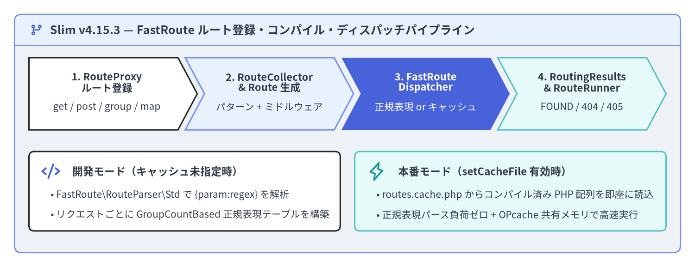
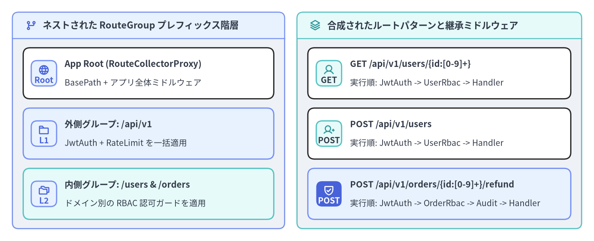

FastRoute パターン・グループ・キャッシュ
Slim v4.15.3 は、URL パターンの解析と正規表現ディスパッチエンジンに Nikic FastRoute（nikic/fast-route）を採用し、それを Slim\Routing\RouteCollectorProxy、RouteCollector、RouteGroup、Route、および FastRouteDispatcher によって PSR-7 / PSR-15 準拠のオブジェクトモデルへと統合しています。ルート登録メソッド、正規表現プレースホルダ構文、ネスト可能な RouteGroup、RouteParserInterface による URL 逆引き生成、そして本番環境向けのルートコンパイルキャッシュを理解することで、数百規模のエンドポイントを持つ API でも正規表現の再パース負荷ゼロで高速にディスパッチできます。

Source Code
from drawlib.canvas import save, setup
from drawlib.icons import phosphor
from drawlib.shapes import rectangle
from drawlib.smartarts import ChevronProcess, Panel
from drawlib.styles import Styles
from drawlib.text import text
setup(width=192, height=74, dpi=150)
outer = Panel(
"Slim v4.15.3 — FastRoute ルート登録・コンパイル・ディスパッチパイプライン",
style=Styles.Neutral.patch(shape_r=2.0),
header_style=Styles.PrimaryNeutral.patch(shape_line_width=1.2),
text_style=Styles.DarkBold.patch(text_size=12.0),
icon=phosphor.git_branch,
icon_style=Styles.PrimaryBold,
header_variant="filled",
header_height=8.5,
)
outer.draw((4.0, 4.0), width=184.0, height=66.0)
proc = ChevronProcess(
style=Styles.White,
text_style=Styles.DarkBold.patch(text_size=10.5),
description_style=Styles.Dark.patch(text_size=10.0),
corner_angle=62.0,
spacing=2.0,
flat_left_end=True,
)
proc.add(
"1. RouteProxy\nルート登録",
description="get / post / group / map",
style=Styles.White,
)
proc.add(
"2. RouteCollector\n& Route 生成",
description="パターン + ミドルウェア",
style=Styles.PrimaryNeutral,
)
proc.add(
"3. FastRoute\nDispatcher",
description="正規表現 or キャッシュ",
style=Styles.PrimaryFlat,
text_style=Styles.WhiteBold.patch(text_size=10.5),
description_style=Styles.White.patch(text_size=10.0),
)
proc.add(
"4. RoutingResults\n& RouteRunner",
description="FOUND / 404 / 405",
style=Styles.SecondaryNeutral,
)
proc.draw(xy=(8.0, 38.0), width=176.0, height=20.0)
rectangle((51.0, 21.0), width=86.0, height=22.0, style=Styles.White.patch(shape_r=1.5))
phosphor.code((14.0, 26.5), width=5.2, style=Styles.PrimaryBold)
text(
(20.0, 26.5),
"開発モード（キャッシュ未指定時）",
style=Styles.DarkBold.patch(text_size=10.8, halign="left"),
)
text(
(14.0, 20.0),
"• FastRoute\\RouteParser\\Std で {param:regex} を解析",
style=Styles.Dark.patch(text_size=10.0, halign="left"),
)
text(
(14.0, 14.5),
"• リクエストごとに GroupCountBased 正規表現テーブルを構築",
style=Styles.Dark.patch(text_size=10.0, halign="left"),
)
rectangle((141.0, 21.0), width=86.0, height=22.0, style=Styles.SecondaryNeutral.patch(shape_r=1.5))
phosphor.lightning((104.0, 26.5), width=5.2, style=Styles.SecondaryBold)
text(
(110.0, 26.5),
"本番モード（setCacheFile 有効時）",
style=Styles.DarkBold.patch(text_size=10.8, halign="left"),
)
text(
(104.0, 20.0),
"• routes.cache.php からコンパイル済み PHP 配列を即座に読込",
style=Styles.Dark.patch(text_size=10.0, halign="left"),
)
text(
(104.0, 14.5),
"• 正規表現パース負荷ゼロ + OPcache 共有メモリで高速実行",
style=Styles.Dark.patch(text_size=10.0, halign="left"),
)
save()
RouteCollectorProxy によるルート登録メソッド
Slim\App およびネストされた RouteCollectorProxy は共通して Slim\Interfaces\RouteCollectorProxyInterface を実装しています。すべてのルート登録メソッドは内部で RouteCollector::map() を呼び出し、戻り値として Slim\Interfaces\RouteInterface インスタンスを返します。この戻り値に対してメソッドチェーンでルート名、ルート固有のミドルウェア、デフォルト引数、呼び出し戦略（Strategy）を設定できます。
RouteCollectorProxyInterface のメソッド |
マッチする HTTP メソッド | 戻り値と主な用途 |
|---|---|---|
get(string $pattern, $callable) |
GET（および HEAD を自動処理） |
RouteInterface — リソース参照・一覧取得エンドポイント |
post(string $pattern, $callable) |
POST |
RouteInterface — リソース新規作成・コマンド実行 |
put(string $pattern, $callable) |
PUT |
RouteInterface — 冪等なリソース全体置換 |
patch(string $pattern, $callable) |
PATCH |
RouteInterface — リソースの部分更新 |
delete(string $pattern, $callable) |
DELETE |
RouteInterface — リソース削除 |
options(string $pattern, $callable) |
OPTIONS |
RouteInterface — CORS プリフライト応答・機能探索 |
any(string $pattern, $callable) |
GET, POST, PUT, PATCH, DELETE, OPTIONS |
RouteInterface — 任意の標準 HTTP メソッドを受け付ける Webhook 等 |
map(array $methods, string $pattern, $callable) |
指定した大文字メソッド配列（例：['GET', 'POST']） |
RouteInterface — 複数メソッド共通ハンドラやカスタム HTTP メソッド |
redirect(string $from, $to, int $status = 302) |
GET（および HEAD） |
RouteInterface — URL 文字列、UriInterface、または名前付きルートへの即時リダイレクト |
[!NOTE]
HEADリクエストの自動処理（RFC 2616 準拠）:Slim\Routing\FastRouteDispatcherは、受信したHEADリクエストに一致する明示的なHEADルートが存在しない場合、自動的に登録済みのGETルートへフォールバックしてディスパッチします。さらにApp::handle()の最終段階で、StreamFactoryInterface::createStream()で生成した空ストリームへレスポンスボディを差し替えるため、GETルートを定義するだけでステータスコードや各種ヘッダ（Content-Type、Content-Length、Cache-Control等）を維持したままボディが空の正しいHEADレスポンスが返却されます。
<?php
declare(strict_types=1);
use App\Action\User\CreateUserAction;
use App\Action\User\DeleteUserAction;
use App\Action\User\GetUserAction;
use App\Action\User\UpdateUserAction;
use Psr\Http\Message\ResponseInterface as Response;
use Psr\Http\Message\ServerRequestInterface as Request;
use Slim\App;
return static function (App $app): void {
// 標準的な REST メソッドを Single-Action Controller へマッピング
$app->get('/users/{id:[0-9]+}', GetUserAction::class)->setName('users.show');
$app->post('/users', CreateUserAction::class)->setName('users.create');
$app->put('/users/{id:[0-9]+}', UpdateUserAction::class)->setName('users.replace');
$app->patch('/users/{id:[0-9]+}', UpdateUserAction::class)->setName('users.update');
$app->delete('/users/{id:[0-9]+}', DeleteUserAction::class)->setName('users.delete');
// map() による複数 HTTP メソッドの一括登録
$app->map(['GET', 'POST'], '/webhooks/stripe', [StripeWebhookController::class, 'handle'])
->setName('webhooks.stripe');
// 旧 URL から新 URL（または名前付きルート）への 301 リダイレクト
$app->redirect('/legacy-docs', '/docs/v4', 301);
// GET（および自動的に HEAD）へ応答するヘルスチェックエンドポイント
$app->get('/healthz', function (Request $request, Response $response): Response {
$response->getBody()->write('{"status":"ok"}');
return $response->withHeader('Content-Type', 'application/json');
})->setName('system.health');
};
FastRoute プレースホルダと正規表現構文
Slim のルートパターンは FastRoute の FastRoute\RouteParser\Std 構文に準拠しています。名前付きプレースホルダは波括弧 {name} で記述し、省略可能なオプショナルセグメントは角括弧 [...] で囲みます。
| パターン機能 | ルート記述例 | マッチする URI の例 | 抽出される $args 連想配列 |
|---|---|---|---|
基本プレースホルダ（既定：[^/]+） |
/users/{username} |
/users/alice |
['username' => 'alice'] |
| 数値正規表現制約 | /users/{id:[0-9]+} |
/users/42（/users/abc は 404） |
['id' => '42'] |
| スラッグ / UUID 制約 | /articles/{slug:[a-z0-9-]+} |
/articles/slim-4-routing |
['slug' => 'slim-4-routing'] |
| 末尾の省略可能セグメント | /users[/{id:[0-9]+}] |
/users または /users/42 |
[] または ['id' => '42'] |
| ネストされた省略可能セグメント | /archive[/{year:[0-9]{4}}[/{month:[0-9]{2}}]] |
/archive, /archive/2026, /archive/2026/11 |
['year' => '2026', 'month' => '11'] |
| 無制限の末尾ワイルドカード | /files/{params:.*} |
/files/docs/2026/report.pdf |
['params' => 'docs/2026/report.pdf'] |
[!IMPORTANT] 正規表現プレースホルダ記述時の注意点:
{name:pattern}の内部では、FastRoute が正規表現の位置キャプチャグループを内部管理に使用するため、通常のキャプチャ括弧(...)は使用できません。選択肢を記述する場合は{format:(?:json|xml)}のように非キャプチャグループ(?:...)を使用してください。また、{...}の外側にある[と]はオプショナルセグメントの区切り文字として解釈されます。
<?php
declare(strict_types=1);
use Psr\Http\Message\ResponseInterface as Response;
use Psr\Http\Message\ServerRequestInterface as Request;
use Slim\App;
return static function (App $app): void {
// 1. ネストされたオプショナルセグメントによるアーカイブ階層
$app->get(
'/archive[/{year:[0-9]{4}}[/{month:[0-9]{2}}]]',
function (Request $request, Response $response, array $args): Response {
$year = isset($args['year']) ? (int) $args['year'] : 2026;
$month = isset($args['month']) ? (int) $args['month'] : null;
$payload = json_encode(['year' => $year, 'month' => $month], JSON_THROW_ON_ERROR);
$response->getBody()->write($payload);
return $response->withHeader('Content-Type', 'application/json');
}
)->setName('archive.index');
// 2. 非キャプチャグループ (?:...) を用いた拡張子制約
$app->get(
'/reports/{id:[0-9]+}.{ext:(?:json|csv|pdf)}',
function (Request $request, Response $response, array $args): Response {
$payload = json_encode([
'report_id' => (int) $args['id'],
'extension' => $args['ext'],
], JSON_THROW_ON_ERROR);
$response->getBody()->write($payload);
return $response->withHeader('Content-Type', 'application/json');
}
)->setName('reports.export');
// 3. スラッシュを含む任意の末尾パスを受け取る {params:.*}
$app->get(
'/storage/{params:.*}',
function (Request $request, Response $response, array $args): Response {
$segments = array_values(array_filter(explode('/', $args['params']), 'strlen'));
$payload = json_encode(['segments' => $segments], JSON_THROW_ON_ERROR);
$response->getBody()->write($payload);
return $response->withHeader('Content-Type', 'application/json');
}
)->setName('storage.browse');
};
ネストされた RouteGroup とスコープ付きミドルウェア
バージョン付き API（/api/v1）やドメイン別のモジュールを構築する際、すべてのルートに同じプレフィックスや認証ミドルウェアを繰り返し記述すると保守性が低下します。$app->group(string $pattern, $callable) を使用すると、Slim\Routing\RouteGroup が生成され、プレフィックスを引き継いだ RouteCollectorProxy がコールバック（または Invokable クラス）へ渡されます。グループは任意の深さにネストでき、$group->add() で付与したミドルウェアはそのグループ配下の全ルートおよびサブグループを自動的にラップします。

Source Code
from drawlib.canvas import save, setup
from drawlib.icons import phosphor
from drawlib.smartarts import CardList, Panel
from drawlib.styles import Styles
setup(width=192, height=78, dpi=150)
left_panel = Panel(
"ネストされた RouteGroup プレフィックス階層",
style=Styles.Neutral.patch(shape_r=2.0),
header_style=Styles.PrimaryNeutral.patch(shape_line_width=1.2),
text_style=Styles.DarkBold.patch(text_size=11.2),
icon=phosphor.git_branch,
icon_style=Styles.PrimaryBold,
header_variant="filled",
header_height=8.5,
)
left_panel.draw((4.0, 4.0), width=88.0, height=70.0)
l_xy, l_w, l_h = left_panel.get_content_box((4.0, 4.0), width=88.0, height=70.0, padding=(3.5, 3.0))
cl_left = CardList(
style=Styles.White,
text_style=Styles.DarkBold.patch(text_size=10.6),
description_style=Styles.Dark.patch(text_size=10.0),
badge_shape="rounded_rect",
badge_style=Styles.PrimaryNeutral,
badge_text_style=Styles.PrimaryBold.patch(text_size=10.0),
icon_style=Styles.PrimaryBold,
direction="vertical",
spacing=3.0,
)
cl_left.add(
"App Root (RouteCollectorProxy)",
"BasePath + アプリ全体ミドルウェア",
badge_text="Root",
icon=phosphor.globe,
)
cl_left.add(
"外側グループ: /api/v1",
"JwtAuth + RateLimit を一括適用",
badge_text="L1",
icon=phosphor.folder,
style=Styles.PrimaryNeutral,
)
cl_left.add(
"内側グループ: /users & /orders",
"ドメイン別の RBAC 認可ガードを適用",
badge_text="L2",
icon=phosphor.folders,
style=Styles.SecondaryNeutral,
)
cl_left.draw(xy=l_xy, width=l_w, height=l_h)
right_panel = Panel(
"合成されたルートパターンと継承ミドルウェア",
style=Styles.Neutral.patch(shape_r=2.0),
header_style=Styles.SecondaryNeutral.patch(shape_line_width=1.2),
text_style=Styles.DarkBold.patch(text_size=11.2),
icon=phosphor.stack,
icon_style=Styles.SecondaryBold,
header_variant="filled",
header_height=8.5,
)
right_panel.draw((96.0, 4.0), width=92.0, height=70.0)
r_xy, r_w, r_h = right_panel.get_content_box((96.0, 4.0), width=92.0, height=70.0, padding=(3.5, 3.0))
cl_right = CardList(
style=Styles.White,
text_style=Styles.DarkBold.patch(text_size=10.5),
description_style=Styles.Dark.patch(text_size=10.0),
badge_shape="rounded_rect",
badge_style=Styles.SecondaryNeutral,
badge_text_style=Styles.DarkBold.patch(text_size=10.0),
icon_style=Styles.SecondaryBold,
direction="vertical",
spacing=3.0,
)
cl_right.add(
"GET /api/v1/users/{id:[0-9]+}",
"実行順: JwtAuth -> UserRbac -> Handler",
badge_text="GET",
icon=phosphor.user,
)
cl_right.add(
"POST /api/v1/users",
"実行順: JwtAuth -> UserRbac -> Handler",
badge_text="POST",
icon=phosphor.user_plus,
)
cl_right.add(
"POST /api/v1/orders/{id:[0-9]+}/refund",
"実行順: JwtAuth -> OrderRbac -> Audit -> Handler",
badge_text="POST",
icon=phosphor.shield_check,
style=Styles.PrimaryNeutral,
badge_style=Styles.PrimaryFlat,
badge_text_style=Styles.WhiteBold.patch(text_size=10.0),
icon_style=Styles.WhiteBold,
)
cl_right.draw(xy=r_xy, width=r_w, height=r_h)
save()
以下の構成例では、外側の /api/v1 グループに JwtAuthMiddleware を一括適用し、その内側にネストした /users グループと /orders グループへそれぞれドメイン固有の RBAC 認可ミドルウェアと監査ログミドルウェアを階層的に付与しています。
<?php
declare(strict_types=1);
use App\Action\Order\ListOrdersAction;
use App\Action\Order\RefundOrderAction;
use App\Action\User\CreateUserAction;
use App\Action\User\GetUserAction;
use App\Middleware\AuditTrailMiddleware;
use App\Middleware\JwtAuthMiddleware;
use App\Middleware\RequireOrderAdminMiddleware;
use App\Middleware\RequireUserReadMiddleware;
use Slim\App;
use Slim\Routing\RouteCollectorProxy;
return static function (App $app): void {
$app->group('/api/v1', function (RouteCollectorProxy $v1): void {
// 内側グループ: /api/v1/users
$v1->group('/users', function (RouteCollectorProxy $users): void {
$users->get('/{id:[0-9]+}', GetUserAction::class)->setName('api.v1.users.show');
$users->post('', CreateUserAction::class)->setName('api.v1.users.create');
})->add(RequireUserReadMiddleware::class);
// 内側グループ: /api/v1/orders
$v1->group('/orders', function (RouteCollectorProxy $orders): void {
$orders->get('', ListOrdersAction::class)->setName('api.v1.orders.index');
$orders->post('/{id:[0-9]+}/refund', RefundOrderAction::class)
->setName('api.v1.orders.refund')
->add(AuditTrailMiddleware::class);
})->add(RequireOrderAdminMiddleware::class);
})->add(JwtAuthMiddleware::class);
};
名前付きルートと RouteParser による URL 逆引き生成
コントローラやテンプレート、Location レスポンスヘッダ内に URL 文字列をハードコードすると、将来プレフィックスを変更した際にリンク切れの原因となります。$route->setName('api.v1.users.show') で一意のルート名を付与し（必要に応じて $route->setArgument('version', 'v1') でデフォルト引数を設定し）、Slim\Interfaces\RouteParserInterface を用いてルート名とパラメータから安全に URL を逆引き生成できます。
RouteParserInterface のメソッド |
basePath の付与 |
スキーム・ホスト名の付与 | 出力例（basePath = '/myapp' の場合） |
|---|---|---|---|
relativeUrlFor(string $routeName, array $data = [], array $queryParams = []) |
含まない | 含まない | /api/v1/users/42?fields=email |
urlFor(string $routeName, array $data = [], array $queryParams = []) |
含む | 含まない | /myapp/api/v1/users/42?fields=email |
fullUrlFor(UriInterface $uri, string $routeName, array $data = [], array $queryParams = []) |
含む | 含む（$uri から抽出） |
https://api.example.com/myapp/api/v1/users/42?fields=email |
<?php
declare(strict_types=1);
use Psr\Http\Message\ResponseInterface as Response;
use Psr\Http\Message\ServerRequestInterface as Request;
use Slim\Routing\RouteContext;
$app->post('/api/v1/users', function (Request $request, Response $response): Response {
$newUserId = '42';
// リクエストの RouteContext から RouteParserInterface を取得
$routeParser = RouteContext::fromRequest($request)->getRouteParser();
// 1. basePath を含むパスを生成: "/api/v1/users/42?expand=roles"
$locationPath = $routeParser->urlFor(
'api.v1.users.show',
['id' => $newUserId],
['expand' => 'roles']
);
// 2. 受信リクエストの UriInterface からスキーム・ホスト名を含む完全 URL を生成
$canonicalUrl = $routeParser->fullUrlFor(
$request->getUri(),
'api.v1.users.show',
['id' => $newUserId]
);
$payload = json_encode([
'id' => (int) $newUserId,
'href' => $canonicalUrl,
], JSON_THROW_ON_ERROR);
$response->getBody()->write($payload);
return $response
->withStatus(201)
->withHeader('Location', $locationPath)
->withHeader('Content-Type', 'application/json');
});
本番環境における FastRoute キャッシュの有効化
既定では、FastRoute はリクエストのたびに全ルート定義を走査して正規表現ディスパッチテーブルを構築します。ルート定義が動的に変化しない本番環境では、ブートストラップ時に $app->getRouteCollector()->setCacheFile($path) を呼び出すことで、コンパイル済みのディスパッチ配列（<?php return [...];）をファイルへ書き出し、2 回目以降のリクエストでは OPcache の共有メモリから直接ロードできます。
RouteCollector::setCacheFile()による事前検証: Slim は指定されたキャッシュファイルが既に存在する場合は読み取り可能か（is_readable()）、まだ存在しない場合は親ディレクトリが書き込み可能か（is_writable(dirname($cacheFile))）を即座に検証し、権限不備があれば起動時に明確なRuntimeExceptionをスローします。- デプロイ時のキャッシュクリア: FastRoute はキャッシュファイルが存在する限り再生成を行わないため、CI/CD デプロイでルートを追加・変更した際は必ず既存の
var/cache/routes.cache.phpを削除（またはリリースごとに新しいディレクトリへ配置）してください。
<?php
declare(strict_types=1);
use Slim\Factory\AppFactory;
$app = AppFactory::createFromContainer($container);
// 本番環境（APP_ENV=production）ではコンパイル済み FastRoute キャッシュを有効化
if (($_ENV['APP_ENV'] ?? 'production') === 'production') {
$routeCacheFile = dirname(__DIR__) . '/var/cache/routes.cache.php';
$app->getRouteCollector()->setCacheFile($routeCacheFile);
}
// 次のページでは、ルート引数の渡し方を制御する InvocationStrategy と
// ミドルウェアからマッチ結果を参照する RouteContext を解説します。
ルートプレースホルダ（{id} や {slug}）をコントローラメソッドへ引き渡す仕組みや、ミドルウェア内でマッチしたルート情報を取得する方法については、次ページの 呼び出し戦略（Strategy）と RouteContext、または関連ポータルの Slim 4 内部アーキテクチャ解説 および Slim 4 API リファレンス を参照してください。